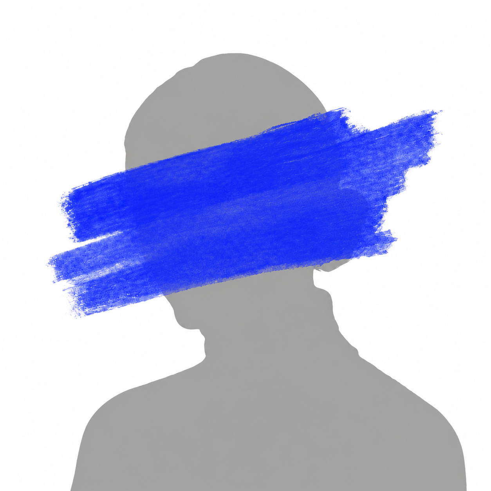

Júlia / 01
I thought I had lost Júlia when our relationship changed. We are still close friends. What I lost was one shape of our relationship, not the care that remains. We still find our way back to each other, though the rhythm is different now.